Driver & Guide Lokal Profesional
Pengemudi 4WD berpengalaman, ramah, aman di medan ekstrem, sekaligus siap menjadi fotografer pribadi Anda.
PAKET WISATA PALING POPULER DI BALI
Nikmati keindahan matahari terbit yang memukaudari ketinggian Gunung Batur tanpa perlu lelah mendaki,lengkap dengan pengalaman berkendara 4x4 Jeep off-roadyang menantang, sarapan hangat di atas kaldera vulkanik,serta didampingi pengemudi lokal yang berpengalaman.
Choose your preferred package and complete your booking details
KEUNGGULAN LAYANAN
Komitmen kami untuk memberikan petualangan jeep tour yang paling aman, nyaman, dan berkesan.
Pengemudi 4WD berpengalaman, ramah, aman di medan ekstrem, sekaligus siap menjadi fotografer pribadi Anda.
Unit Jeep terawat dan bersih untuk menjamin kenyamanan maksimal menyusuri jalur sunrise dan Black Lava.
Sudah termasuk antar-jemput hotel, tiket masuk resmi, sarapan hangat, serta kopi/teh Kintamani.
PENGALAMAN TERBAIK DI BALI
Nikmati keindahan matahari terbit dari kawasan Gunung Batur dengan cara yang lebih nyaman dan menyenangkan, tanpa harus mendaki selama berjam-jam.
Dengan Jeep 4WD, Anda dapat menyaksikan panorama alam yang menakjubkan, mulai dari Gunung Agung, Gunung Abang, hingga Danau Batur yang memesona. Perjalanan semakin seru dengan petualangan off-road melintasi hamparan Black Lava, formasi batuan lava hitam yang eksotis dan menjadi spot foto favorit.
Nikmati perjalanan menuju spot sunrise menggunakan Jeep 4WD tanpa harus melakukan pendakian panjang.
Saksikan keindahan Gunung Agung, Gunung Abang, dan Danau Batur dalam satu perjalanan yang mengesankan.
Rasakan sensasi off-road melintasi hamparan batuan lava hitam yang eksotis, dengan latar belakang pemandangan alam yang luar biasa dan cocok untuk mengabadikan momen liburan Anda.
Pilih paket untuk melihat aktivitas yang termasuk dalam perjalanan Anda.
Urutan dan waktu kunjungan dapat menyesuaikan kondisi cuaca, lalu lintas, serta operasional di lapangan.
CLEAR & TRANSPARENT SERVICE
Periksa fasilitas yang termasuk dalam paket Mount Batur Sunrise Jeep Tour dan biaya tambahan yang mungkin perlu Anda siapkan sebelum berangkat.
Fasilitas seperti sarapan, tiket masuk, atau kunjungan tambahan mengikuti rincian paket dan konfirmasi pemesanan.
Pastikan kembali rincian harga dan fasilitas saat melakukan pemesanan.
PREPARE FOR YOUR ADVENTURE
Perlengkapan yang Perlu Dibawa untuk menikmati sunrise dan perjalanan off-road dengan nyaman.
Jaket atau lapisan pakaian hangat karena udara sebelum matahari terbit dapat terasa dingin.
Sepatu tertutup atau alas kaki yang nyaman untuk berjalan di permukaan tanah dan batu vulkanik.
Air minum, tisu, obat pribadi bila diperlukan, serta uang tunai untuk pengeluaran tambahan.
Bawa perangkat untuk mengabadikan sunrise dan pemandangan, serta pastikan baterainya terisi penuh.
PLEASE READ BEFORE BOOKING
Mount Batur Sunrise Jeep Tour · AWAN TREKKING
NEED MORE INFORMATION?
Quick answers to help you prepare for your Jeep sunrise adventure.
Jeep Tour membawa Anda ke titik-titik yang dapat diakses kendaraan sesuai rute. Beberapa lokasi mungkin tetap memerlukan berjalan kaki singkat.
Paket Jeep dihitung per kendaraan dengan kapasitas umum 1–3 peserta per Jeep. Untuk rombongan lebih besar, Jeep tambahan mungkin diperlukan.
Transfer bergantung pada opsi yang dipilih. Jika memilih meeting point, Anda datang sendiri ke titik temu; jika memilih hotel transfer, biaya dan area penjemputan akan dikonfirmasi sesuai lokasi.
Trip 1 berfokus pada sunrise. Trip 2–5 menambahkan lokasi atau pengalaman seperti Floating Temple, Black Lava, dan Black Sand sesuai nama serta rincian paket.
Ya. Urutan dan waktu kunjungan dapat menyesuaikan kondisi cuaca, lalu lintas, keselamatan, dan operasional di lapangan.
Detail penjemputan dan kontak pengemudi akan dikonfirmasi oleh tim AWAN TREKKING sebelum aktivitas.
Make your Bali adventure even more memorable. Explore our other experiences and contact our team for package details and availability.
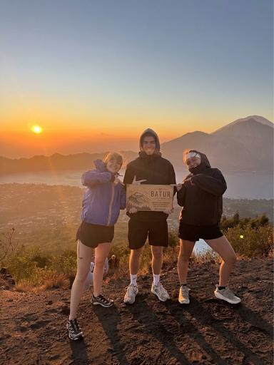
BEST SELLERExperience a magical sunrise from the summit of Mount Batur with our local guide.
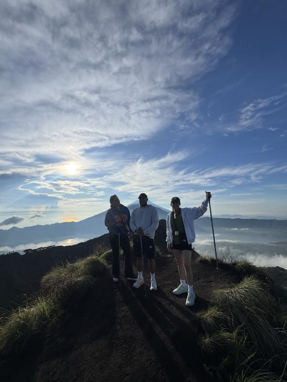
TrekkingDiscover Mount Batur on a daytime hike with a local guide and views across the surrounding caldera.
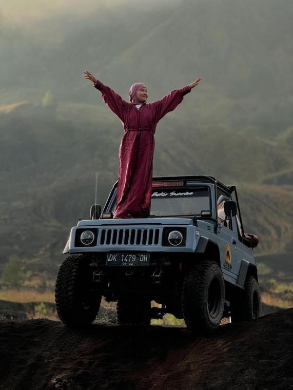
JeepEnjoy a daytime 4WD Jeep journey across the Mount Batur area and take in the volcanic scenery with a local team.
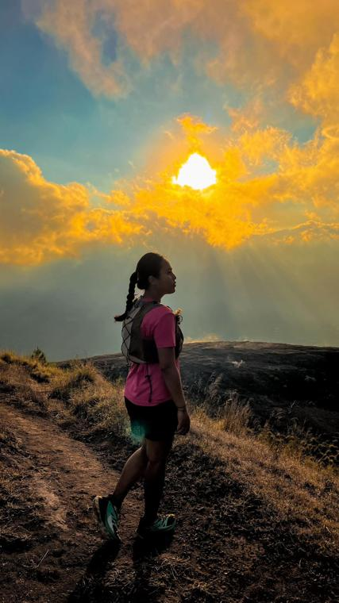
TrekkingEnjoy a guided afternoon trek and watch the changing colors of the volcanic landscape at sunset.
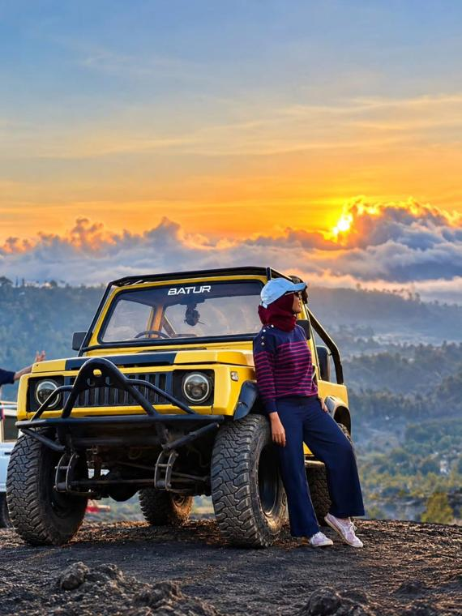
JeepTake a 4WD Jeep journey across the Mount Batur area and enjoy the sunset over the volcanic landscape.
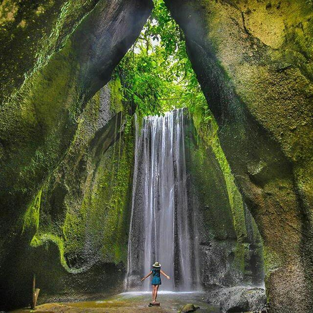
WaterfallVisit the beautiful Tukad Cepung Waterfall and explore its distinctive natural surroundings.
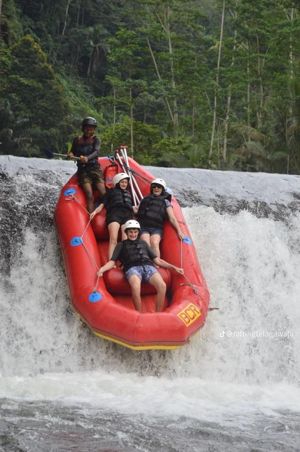
RaftingEnjoy a guided white-water rafting experience through Bali’s lush river landscape.
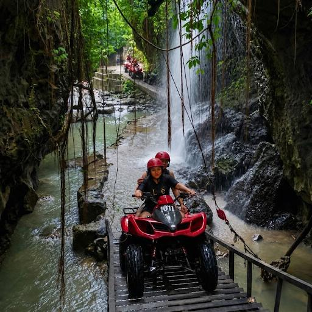
ATVRide through adventurous outdoor tracks and enjoy an exciting ATV experience in Bali.
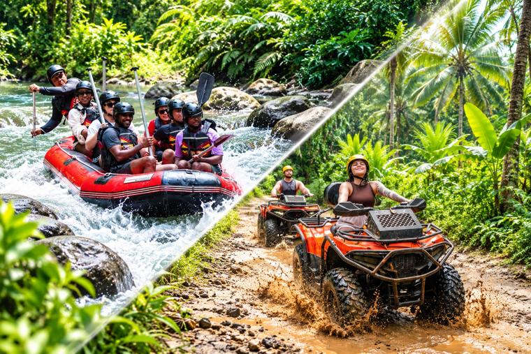
Special ComboCombine an exciting ATV ride with white-water rafting on the Ayung River for a full day of outdoor adventure.
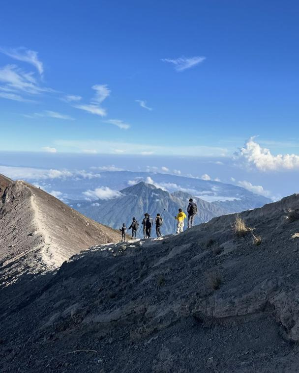
TrekkingChallenge yourself with a guided Mount Agung ascent and experience sunrise from Bali’s highest volcano.
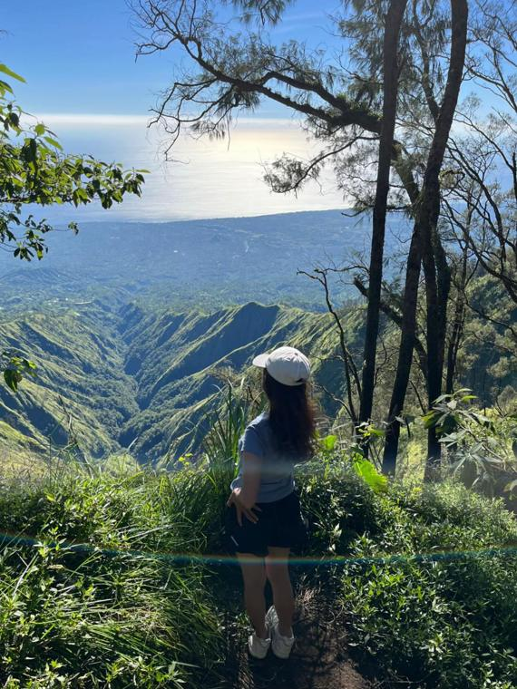
TrekkingTrek through forested mountain trails and enjoy panoramic views of the Batur caldera area.
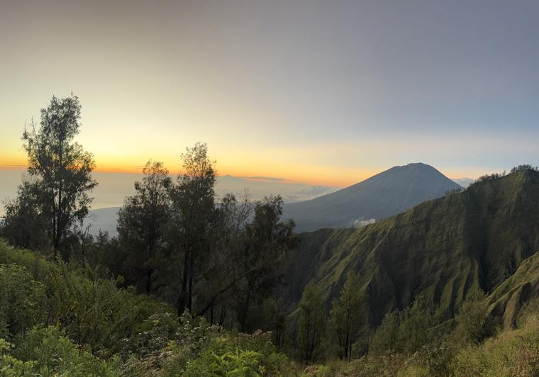
TrekkingTrek the natural trails around Trunyan Hill to enjoy the sunrise, with views of Lake Batur and the surrounding mountains.
YOUR EXPERIENCE MATTERS
Share your experience with AWAN TREKKING and help future adventurers plan their Mount Batur Sunrise Jeep Tour.
There are no guest reviews here yet. If you have joined one of our tours, share your feedback using the button below.
LOCATION & PICK-UP OPTIONS
Pilih cara menuju titik awal Mount Batur Sunrise Jeep Tour yang paling sesuai dengan lokasi menginap dan kebutuhan perjalanan Anda.
Pastikan nama hotel atau vila, area penjemputan, jumlah peserta, dan nomor WhatsApp aktif sudah diberikan dengan benar.
YOUR BALI ADVENTURE STARTS HERE
Plan your Mount Batur Sunrise Jeep Tour with a local team. Choose your activity date, select a meeting point or hotel transfer, and check your estimated price before contacting us.
PERSONAL ASSISTANCE
Our AWAN TREKKING team is happy to help with tour preparation, large-group bookings, pickup questions, and customized Mount Batur Jeep Tour requests. Contact us and we’ll help you plan the right experience.
For tour preparation, large-group bookings, pickup questions, or tailor-made packages.